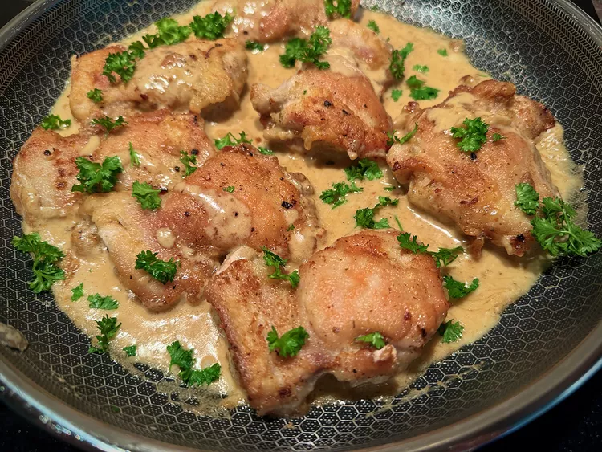

20 Layer Air Fryer Nachos
These layered air fryer nachos are fully loaded for the party with
seasoned ground sirloin, tortilla chips, chiles, cheese, sour cream,
alapenos, and tomatoes.

Prep Time:10 mins
Cook Time:15 mins
Total Time:25 mins
Servings:12
Ingredients
- 2 lbs. ground sirloin
- 1 cup finely chopped onion, divided
- 1 package taco seasoning
- 1/2 cup water
- 1 1/2 bags (about 20 ounces) tortilla chips, divided
- 16 ounces shredded Cheddar cheese, divided
- 2 (4-ounces) cans diced green chiles
- 1 (15-ounce) can black beans, drained and rinsed, divided
- 1 cup salsa
- 1/2 cup sliced pickled jalapenos, plus more for garnish if desired
- 1 (2.25-ounce) sliced black olives, drained
- 8 ounces sour cream
- 1 avocado, peeled and diced
- 2 Roma tomatoes, seeded and diced
- 1/2 cup cilantro
Directions
Step1
Heat a large skillet over medium-high heat and add ground beef
and onion. Cook, while crumbling with a spoon and stirring often
until browned. Add taco seasoning and water and cook until slightly
thickened, about 3 minutes. Remove from heat.
Step2
Line the bottom of a deep air fryer basket with parchment paper and allow
the parchment to come up the sides. Arrange a layer of chips along the
bottom. Top with half of the beef mixture and sprinkle 1/3 of the cheese
on top. Spoon green chiles over cheese and top with a second layer of chips.
Sprinkle half of the beans evenly over the chips and top with salsa and the
second third of the cheese. Arrange the last layer of chips over the cheese
and top with remaining beans. Add sliced jalapenos, remaining
cheese and olives.
Step3
Set air fryer to 350 degrees F (175 degrees C) and cook until the
cheese is melted and begins to brown, 6 to 8 minutes.
Step4
Using the parchment paper, carefully lift the nachos from the air fryer
basket onto a serving platter. Top with sour cream, avocado, tomato,
cilantro, and any additional toppings if desired. Serve immediately.
7 Chicken Thigh Dinners for Every Night of the Week

Chicken thighs are cheap, available at pretty much any grocery store,
and easy to cook—what's not to love about the versatile meat counter
staple? Use chicken thighs to make everything from quick and easy
slow cooker meals for busy weeknights to impressive, dinner
party-worthy dishes for weekend get-togethers.
01 of 08 Monday: Creamy Garlic Chicken

"Calling all garlic lovers! This creamy garlic chicken is an easy,
fragrant skillet dish that is great with mashed potatoes or mashed
cauliflower. Since it cooks in one pan, cleanup is easy,
too." —Brenda Venable
Prep Time:15 mins
Cook Time:25 mins
Total Time:40 mins
Servings:4
Ingredients
- 1 teaspoon Italian herb seasoning, or seasoning blend of choice
- 1/2 teaspoon salt, or to taste
- 1/4 teaspoon freshly ground black pepper, or to taste
li>1/4 teaspoon granulated garlic
- 1/4 cup all-purpose flour
- 2 pounds skinless, boneless chicken thighs
- 2 tablespoons unsalted butter
- > tablespoons olive oil
- 8 garlic cloves, or more as needed, peeled and smashed, about 1/4 cup lightly packed
- 1 cup heavy cream
- 1 cup chicken broth
- 1 tablespoon chopped fresh parsley, or as needed (optional)
Directions
Step1
Combine herb seasoning, salt, pepper, granulated garlic, and
flour in a 1-gallon resealable plastic bag and mix well.
Step2
Combine butter and olive oil in a large, nonstick skillet over
medium heat. Pat chicken thighs dry with paper towels, place in
the bag of seasoned flour, seal, and toss chicken thighs in the flour
mixture until evenly coated.
Step3
When butter stops sizzling, add chicken pieces and cook until
nicely browned, no longer pink at the center and juices run clear,
4 to 5 minutes per side. An instant-read thermometer inserted near
the center should read 165 degrees F (74 degrees C). Remove to a
plate and keep warm.
Step4
Add smashed garlic to the same skillet. Reduce heat to medium-low
and cook garlic, stirring frequently, just until fragrant, no
longer than 1 minute.